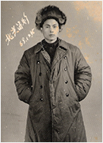

叶文贵

姓名:叶文贵
性别:男
籍贯:浙江苍南
简介
叶文贵，男，1950年出生，籍贯：浙江苍南，是浙江省第六届政协委员、全国优秀农民企业家。叶文贵是“温州模式”早期标志性人物，曾有“温州第一能人”美誉，是一位具有超前眼观的创新型企业家。他曾创办了轧铝厂、高频热合机厂、压延薄膜厂、包装材料厂6等个厂，办一个火一个。1987年，叶文贵的包装材料厂，年产值超过一千万，他还发行了股票，这也是中国最早的私营企业股票。叶文贵被破格提拔为金乡区副区长，个体户当官，轰动一时，还被邀请到中央党校给省级领导干部讲课，上万字的讲稿成为中央党校的教材全国发行。1985年，全国政协副主席、著名社会学家费孝通到温州考察，参观了叶文贵的厂子后，连连称他是“新型的企业家”。后来叶文贵从国内跑的汽油车都是外国品牌这一点受到启发，决定造一辆属于中国人自主品牌的电动汽车，而且他把车造出来了，充电3个小时能够跑200公里，国家四部委还给他颁发了证书，但因为当时的市场并没有起来，所以最终没能实现产业化。叶文贵后来渐渐淡出了人们的视野，在老家过起了田园生活。三十多年过去，在创业的他道路上曾经登上高峰，又曾经滑入低谷，不能不使人感慨万千。但在改革开放的道路上，勇于去试验，还有什么比这个更有意义，浙商敢为人先的创业精神永远不会过时。